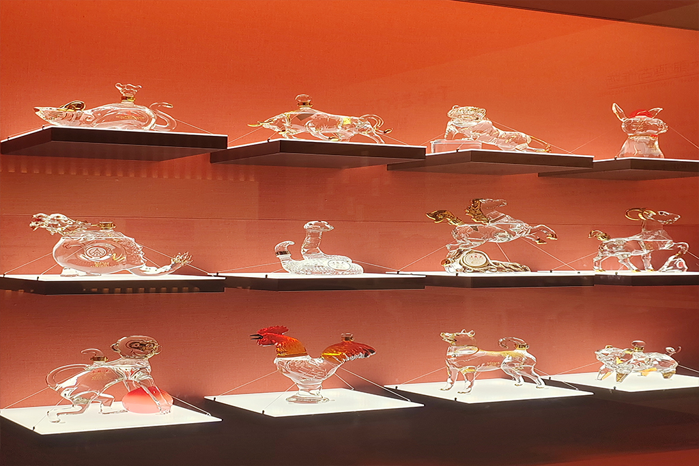

宜宾的酿酒历史悠久，作为中国酒文化的发祥地之一，这里诞生了许多著名的白酒品牌。其中，最为知名的是五粮液，被誉为世界名酒。此外，还有其他一些白酒品牌，如郎酒、茅台等。

宜宾白酒产业的发展得益于其独特的地理环境、气候条件以及酿酒工艺。这里的白酒品种丰富，风味独特，品质优良，深受消费者喜爱。在宜宾，还有许多与酒文化相关的历史遗迹和景点，如流杯池公园等。
近年来，宜宾白酒产业不断发展壮大，成为了中国白酒产业的重要基地。宜宾市积极打造白酒产业集群，推动白酒产业转型升级，提高产品质量，以满足市场需求。同时，宜宾白酒企业也注重创新和研发，不断丰富产品线，拓展市场渠道，提升品牌影响力。
中国白酒之都宜宾以其丰富的酒文化、独特的地理环境、优质的白酒品牌和产业实力，成为了中国白酒产业的典范。宜宾将继续发挥优势，推动白酒产业的发展，为国内外消费者提供更多优质的美酒。